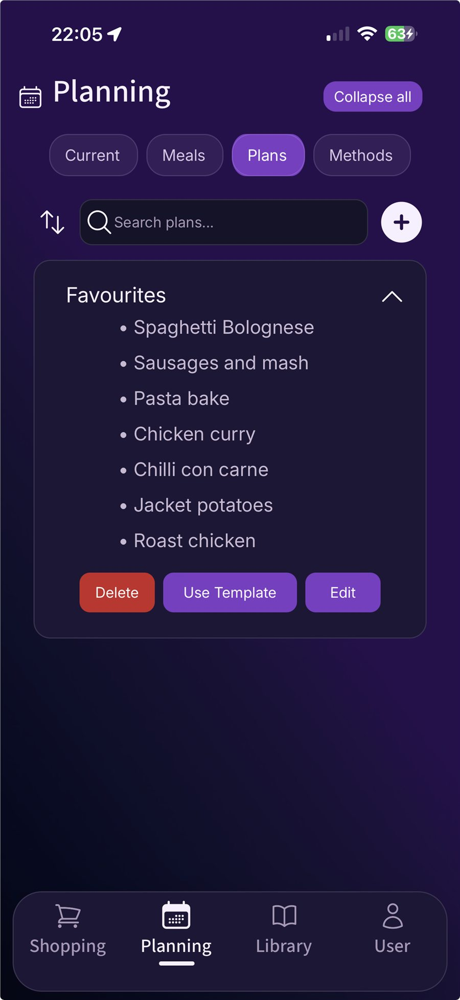

Family meal planning gets difficult when every week starts from a blank page. You ask what everyone wants, look in the fridge, think about the budget, remember school nights, and still end up making the same rushed decision at 5pm. A repeatable system is calmer. It gives each week a familiar shape, leaves space for preferences, and turns the plan into a shop without holding the whole thing in your head. The goal is not to please everyone all the time. It is to make dinner predictable enough that the household can relax.
Make family meal planning repeatable.
Fameally helps you save meals, reuse weekly plans, generate the food shop, and keep household planning in one place.
Start with the shape of the household week
Before choosing meals, look at the week that is already there. Mark the school nights, clubs, late finishes, childcare handovers, homework pressure, train delays, and the evening when everyone tends to be hungry before anyone is ready to cook.
That quick check changes the whole plan. A late Wednesday probably needs jacket potatoes, leftovers, omelettes, or pasta. A quieter Sunday can carry roast chicken, lasagne, chilli, curry, or something that gives you leftovers for later in the week. You are not lowering standards. You are putting the easier food where the harder evenings are.
Mark the hard evenings
Circle the nights with clubs, late finishes, awkward pick-ups, homework pressure, or low energy. Those are not the nights for meals that need three pans and a clear hour.
Protect one flexible slot
Keep one dinner movable. It can become a freezer meal, leftovers, beans on toast, or the meal you move when Tuesday becomes more complicated than expected.
Plan only what you shop for
If dinners are the problem, plan dinners. If packed lunches, cereal, fruit, and snacks are what throw the shop off, add those as regular items. The plan does not need to become a spreadsheet.
Build a small list of meals you actually use
Most families already have a handful of dinners that do the heavy lifting. They are not always exciting, and that is partly why they work. Spaghetti bolognese, chicken curry, sausages and mash, pasta bake, fajitas, jacket potatoes, chilli, roast chicken, freezer portions, or whatever your own family eats without much drama.
Write down 10 to 15 of those meals. Include a few proper cooks, a few fast dinners, a couple of cheaper options, something that makes good leftovers, and two fallback meals you can make when the day has gone sideways. That small list is enough. You do not need a recipe archive before you can plan a normal week.
It also makes the shop easier. The same meals bring back the same ingredients: mince, pasta, wraps, rice, cheese, tins, frozen veg, yoghurt, bread. After a while you know what overlaps, what is already in the cupboard, and which meal helps when the budget is tighter.
Give each night a job
A week is easier to fill when each night has a loose job. Sunday might be the bigger cook. Monday can be familiar. Tuesday might need something quick after a club. Wednesday can stay flexible. Thursday can use what is already in the fridge. Friday can be low effort. Saturday can depend on plans.
The point is not to follow those labels perfectly. The point is that you stop asking "what could we possibly eat?" seven times. You ask smaller questions: what is the quick dinner, what can make leftovers, what needs using, and what can move if the week changes?
Use this template: the family meal planning check-in
Copy this into a note, print it, or use it before writing the food shop.
- Fixed commitments: Which evenings are late, busy, uncertain, or likely to be low energy?
- Go-to meals: Pick from meals your family already eats without much negotiation.
- Proper cook nights: Choose 2 or 3 meals that need a bit more time.
- Quick meal nights: Choose 2 meals that can be made with low effort.
- Fallback meal: Keep one cupboard, freezer, or leftover option ready.
- Preference check: Let people choose from a short list rather than asking an open-ended question.
- Shopping-list check: Turn each meal into ingredients and combine duplicates before shopping.
- Household extras: Add bread, milk, cereal, packed-lunch items, cleaning, toiletries, and general supplies.
- Next week: Save the meals or week shape that worked so you do not start again from nothing.
Make room for preferences without handing over the week
Asking "what does everyone want this week?" sounds fair, but it often creates a long list and no decision. It is easier to ask a smaller question: "Which two of these meals should we have?" or "Do we want curry or fajitas this week?"
Then place the answer where it fits. Fajitas may need a night with time to chop and assemble. A roast probably belongs at the weekend. Pasta bake can work on a busy night if it is already made or simple enough to throw together. Preferences matter, but the diary still gets a vote.
It also helps to separate "not tonight" from "never". If a requested meal does not fit, save it for next week. People are more patient with a no when it sounds like "not this Wednesday" rather than "I ignored you".
Turn the plan into a shopping list
A family meal plan only really helps when it becomes a list you can use in the supermarket. Once the meals are chosen, write the ingredients for each one, combine duplicate items, check what is already at home, then add the regular items that do not belong to one recipe.
This is where the planning starts paying you back. If pasta bake, jacket potatoes, and packed lunches all need cheddar, you can buy enough once. If curry and chilli both need rice, you can check the cupboard before buying another bag. If bread, cereal, fruit, and yoghurts disappear every week, they belong on the list even if they are not part of dinner.
For a step-by-step version of this part, use the Fameally guide on turning a meal plan into a food shopping list.
Reuse the parts of the week that work.
Fameally lets you keep meals and weekly plans ready for next time, then turn planned ingredients into organised shopping lists.
Where Fameally fits into this routine

Fameally is built around the weekly loop: keep the meals you cook often, add them to a plan, generate the food shop, and keep the rest of the list organised. A family favourite can sit in your meal library. A week that worked can be saved and used again. Regular items can come back without relying on memory.
If more than one person is involved, a family workspace can keep meals, plans, and shopping lists in sync for invited members. That matters because the list needs to become the place everyone checks, not another thing one person carries around in their head.
Save what worked so next week is easier
The biggest improvement is not one perfect plan. It is not starting from nothing next time. At the end of the week, notice what actually helped. Which dinner was easy? Which one made useful leftovers? Which meal was too much for a school night? Which item did you forget in the shop?
Keep those pieces. Save the meals people ate. Keep the quick dinner that rescued the busy night. Repeat the week shape if it fitted your routine. After a few rounds, planning dinner becomes less about inventing something new and more about using what your family has already proved will work.
FAQ
- How do I start family meal planning?
- Start with the diary. Mark the busy evenings, choose easier meals for those nights, put bigger cooks where there is more time, and keep one fallback dinner ready.
- How many meals should a family plan each week?
- Plan the meals you actually shop for. A good starting point is 5 or 6 dinners, one flexible night, and regular breakfast, lunch, snack, or packed-lunch items added separately.
- How do I plan meals when everyone wants different food?
- Offer choices from a short list instead of asking an open-ended question. If a request does not fit the week, save it for the next plan rather than losing it.
- How do I make family meal planning cheaper?
- Reuse ingredients across meals, plan leftovers deliberately, check the fridge, freezer, and cupboards before shopping, and keep simple fallback meals ready for changed plans.
- Is a meal planning app useful for families?
- It can be, especially when meals, ingredients, and shopping lists need to stay connected. It helps most when the same meals repeat or more than one person adds to the plan.
Related Fameally links
These guides cover the two steps either side of this routine: building a week that can bend and turning it into a shop.
Plan the week in Fameally.
Download Fameally to save meals, reuse weekly plans, generate shopping lists, and make the next food shop easier to start.